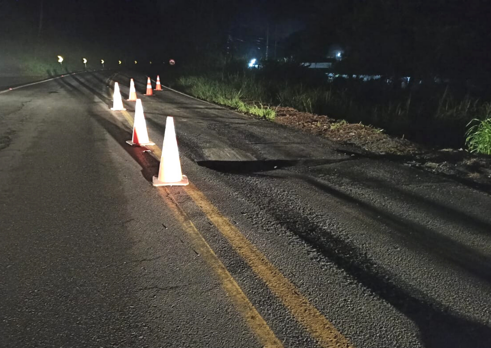
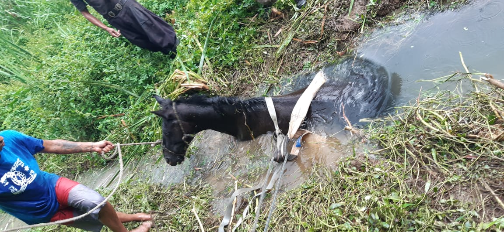

Pista cede na BR-280 e rodovia é parcialmente interditada em Jaraguá do Sul
Divulgação / PRF
Parte de uma pista da BR-280 começou a ceder em Jaraguá do Sul e a rodovia federal precisou ser parcialmente interditada no quilômetro 75, no Norte de Santa Catarina. O problema aconteceu na noite da última terça-feira (2).
A interdição aconteceu por volta das 22h30 no sentido Oeste, em direção à Corupá. Segundo a Polícia Rodoviária Federal (PRF), a pista começou a ceder e o fluxo precisou ser desviado por uma estrada de terra passando pelo bairro Nereu Ramos. No sentido ao litoral, o fluxo de veículos segue normalmente.
A Defesa Civil também foi comunicada sobre o incidente e se deslocaria até o local na manhã desta quarta-feira (3). Segundo o coordenador regional, Osvaldo Gonçalves, existe uma tubulação que passa por baixo da rodovia e parte do asfalto cedeu.
Por se tratar de uma rodovia federal, o Departamento Nacional de Infraestrutura de Transportes (DNIT) foi chamado até o local para fazer a avaliação e tomar providências para o conserto.
Segundo o órgão, as equipes já trabalham no conserto e devem concluir a obra ainda nesta quarta-feira. A pista cedeu sobre um bueiro metálico e precisou ser aberta com a ajuda de uma máquina.

Veja Mais+
Bombeiros resgatam cavalo em riacho

Cavalo ficou atolado no riacho, em Mafra, e não conseguiu sair sem o apoio dos bombeiros.

.png)